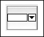
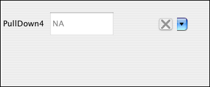
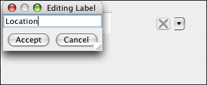
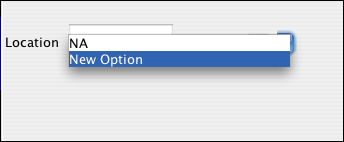
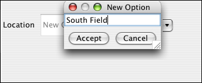

Pull-down widget
Pull-down menus allow related, frequently re-used options to be selected with a mouse click, so users do not
have to manually type in the text. Pre-supplied options also help
to avoid semantic ambiguities caused by spelling, punctuation and capitalization
inconsistencies. This is a powerful and helpful widget for encouraging and enabling the use
of controlled vocabularies.
Example:

In the Create Form tab, click the pull-down icon in the toolbar.

A pull-down widget appears with a default label, perhaps as "PullDown1."

Double click the default label "PullDown1."
In the dialog box that appears, enter the new label name.

Use the "New Option" choice in the pull-down to enter a new value.

In the dialog box that appears, enter a new value.

Continue adding as many new options as needed. Note, however, that you can
add more options later, too. This can be done in either Enter Data or
Create Form mode.